Modified 18 December 2008


Alessandro Gallo: A Trip to the Zoo

Alessandro Gallo: A Trip to the Zoo

Gender, Culture, Clay: A Discussion

Chris Echeta's Ceramic Chronicles of Nigeria

An Interview with Sculptor Cheryl Tall

Ericka Clark Shaw
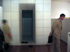
Letters from Zen: The Third World Ceramics Biennale
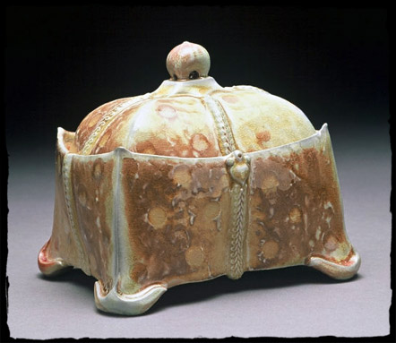
Of Mind & Body, The Work of Kristen Kieffer
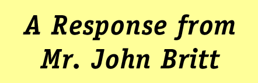
A Response From Mr. John Britt
A Letter Of Inquiry To Mr. John Britt
Crafts: A Deconstructionists View

A Conversation with Matt Towers
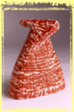
Solid Form: A Profile of Ashley James

Museu Nacional Do Azulejo, Lisbon, Portugal
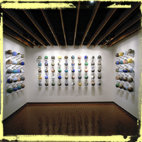
NCECA 2001: Memory Serves
Want To Be A Ceramic Faculty Member?!?
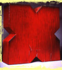
Traveling the Ceramic Highway
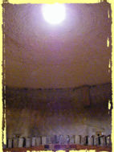
Expanding Boundaries: Exploring Clay
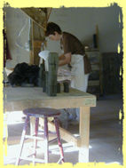
A Watershed Experience
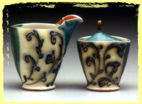
Conversing with Julia Galloway
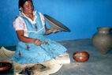
NCECA 2000: Potters’ Impressions of Oaxaca
The Unknown Craftsman is Dead.
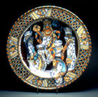
Maiolica: A Symposium
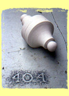
Transept
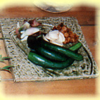
A Dinner Party...
Reports from NCECA 99
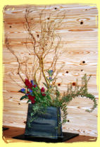
Eiji Kinoshita
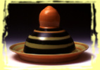
Haystack '99: Alec Karros
Letters from Angela
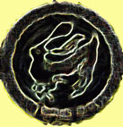
“I, too, was a Neo-Leachian...”
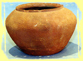
Touch
Jeanne Jaffe
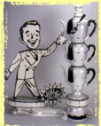
Mark Burns